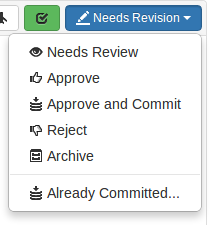

|

|
Reviews can be in one of several states. The biggest differentiator is whether the review's files have any outstanding, uncommitted changes or not.
Whenever a review's state changes, an email notification is sent to all review participants, including the author, anyone who comments on the review or its files, anyone who has changed the review's state previously, anyone who is @mentioned, or a member of a group that is @@mentioned in the review's description or comments.
Code reviews can be in one of the following states:
By default, when an Approved review is committed or updated, Swarm changes the state to Needs Review if the files have been modified since the review was approved. Files are considered modified if the list of involved files changes, or if the file content or file-type changes.
If one or more files in a review has the filetype +k (ktext), this behavior is undesirable because the files will appear to be modified when the Helix server replaces RCS keywords with their current values. See Unapprove modified reviews to see how to disable this behavior.
By default, review authors can approve their own reviews. This behavior is based on Swarm's advisory nature.
Self-approval by authors can be prohibited on a project-by-project basis by specifying moderators for project branches (see State change restrictions with moderation). However, authors who are moderators can self-approve their own reviews.
Administrators can configure Swarm to prevent all self-approval by review authors. See Disable self-approval of reviews by authors.
Typically, any authenticated user can change the state of a review (remember that the review state is merely advisory in most cases). When the Only Moderators can approve or reject reviews restriction is enabled for a project branch, and one or more moderators have been assigned to that branch (see Add a project for details), that branch is moderated. Changing the state of any review associated with a moderated branch is restricted as follows:
The review's author, when she is not a moderator, can change the review's state to Needs Review, Needs Revision, Archived, and can attach committed changelists.
Normally, the review's author cannot change the review's state to Approved or Rejected on moderated branches. However, authors that are also moderators have moderator privileges, and may approve or reject their own review.
When disable_self_approve is enabled, authors who are moderators (or even users with admin privileges) cannot approve their own reviews.
For the review's author and project members, if a review is not in one of their permitted states, for example if the review's state is Rejected, they cannot transition the review to another state.
These restrictions have no effect on who can start a review.
Reviews can optionally have required reviewers. When a review has required reviewers, the review cannot be approved until all required reviewers and required reviewer groups have up-voted the review. If the review is associated with a project that has assigned moderators, even the moderators cannot approve the review without up-votes from all required reviewers (but they can reject the review).
When a group is a required reviewer, it can be set to operate in one of two ways:
Required reviewers are expected to take greater care while performing a review than non-required reviewers, as their votes affect whether a review can be approved or not.
To edit the reviewers for a review, and to change whether a reviewer is required or not, see Edit reviewers.
If a review involves a branch with assigned moderators, only a moderator can approve the review, even if all required reviewers have up-voted the review.
See the description of assigning moderators.
The drop-down menu provides two special actions included with the state change for uncommitted reviews:

Approve and Commit
When selected, a dialog appears allowing you to update the description, select which jobs should be associated, and specify the job status upon commit. When you click the Approve and Commit button, the review becomes approved and its associated files are committed. By default, Swarm's activity stream entries and email notifications note that you committed the review on behalf of the review's author. This can be configured to credit only the committer, see Commit credit for details.
If selected, the Remove pending changelists button attempts to clean up automatically any changelists left behind after the review has been committed, including removing any shelved files. This option can be removed by an administrator. See Review cleanup for details.
The commit option can be removed by an administrator. See Disable commit for details.
By default, if the committer is not the review's author, Swarm credits both users. If you prefer to credit only the committer, see Commit credit for details.
Already Committed
Sometimes, a changelist that a review is based upon gets committed without the review being updated. In such a situation, selecting Already Committed displays a dialog presenting a list of candidate changelists:
Specify the changelist, if you know it, or browse the recent changes to locate the submitted change. The first field under History allows you to filter changes by depot path. The second field allows you to filter changes by userid. Click a changelist to select it, and then click Select to associate the changelist with the review and complete the review. Or, just double-click a changelist to do the same.
The review state drop-down menu for committed changes When a review has been committed, sometimes a follow-up change needs to be associated with the review. For committed reviews, the drop-down menu provides the Add a commit entry in place of Already Committed. Select Add a Commit to use the Select Change dialog as described above.
| |
|